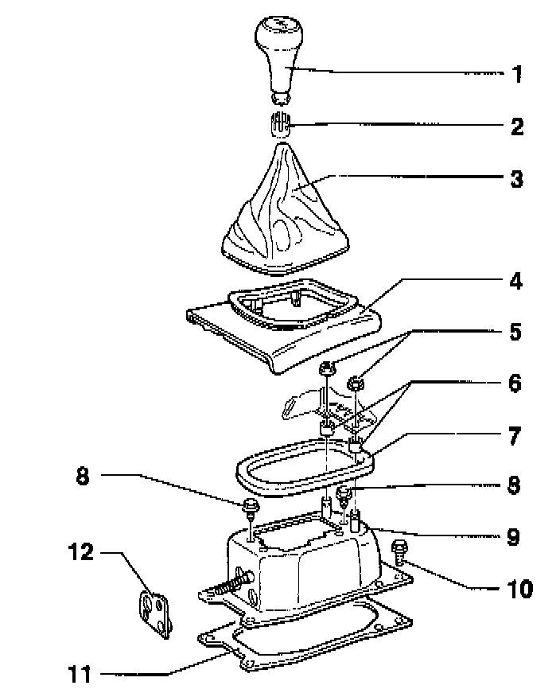
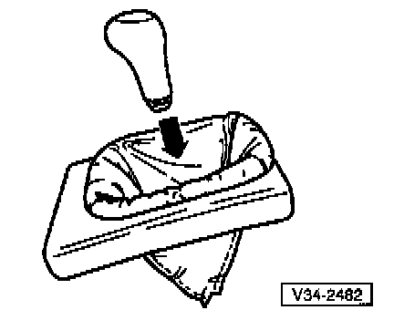
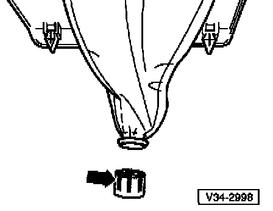

02A Transmission
GEAR SELECTOR HOUSING, REMOVING AND INSTALLING

1 - Shift knob
2 - Sleeve
Installing see "SHIFT LEVER BOOT, INSTALLING" below.
3 - Boot
When removing, lift oft with frame from center console
Installing see "SHIFT LEVER BOOT, INSTALLING" below.
4 - Frame
5 - Hex nut
Attaches console to gearshift housing -9-
Remove before removing gear selector mechanism
6 - Spacer
Installed between console and gearshift housing -9-
7 - Gasket
Between gearshift housing and floor
Self-adhesive
Attach to gearshift housing
8 - Hex bolt
For mounting plate to gearshift housing
Tightening torque: 15 Nm (11 ft lb)
9 - Gearshift housing
10 - Hex bolt
Quantity: 4
Tightening torque: 25 Nm (18 ft lb)
11 - Gasket
Self-adhesive
Attach to underside of gearshift housing
12 - Gasket
Install between selector cables and gearshift housing
SHIFT LEVER BOOT, INSTALLING
- Turn boot inside out.

- Insert shift knob in boot (-arrow-).

- Secure boot to shift knob with sleeve (-arrow-).
- Install shift knob and boot together.